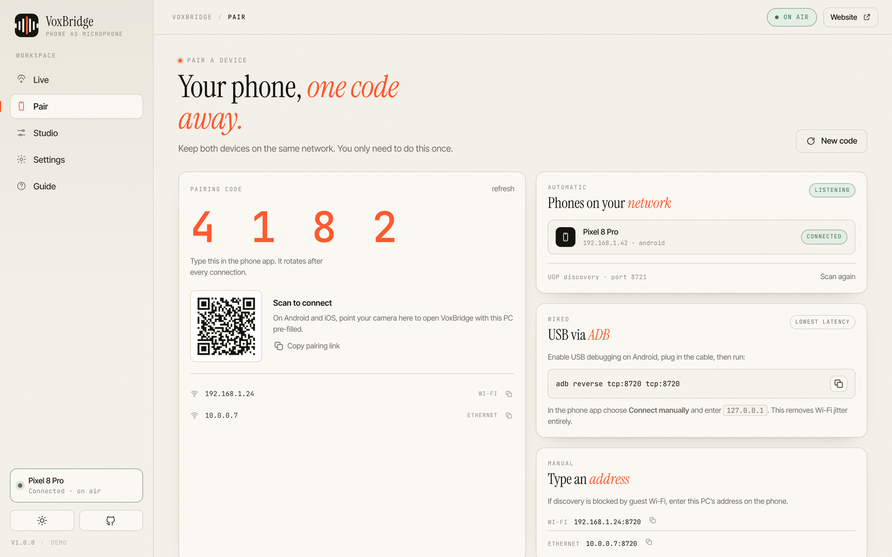

Wi-Fi discovery
A UDP announcement every two seconds means your phone finds the PC without typing an address. Manual entry is always available when guest Wi-Fi blocks broadcast.
The complete list, without the marketing fog. Everything below ships in both phone apps and the Windows desktop app, and everything can be switched off if you prefer a raw signal.
One socket, one codec, one clock. The transport is boring on purpose so the audio can be interesting.
A UDP announcement every two seconds means your phone finds the PC without typing an address. Manual entry is always available when guest Wi-Fi blocks broadcast.
Forward the port with adb reverse and the phone connects over the cable. No Wi-Fi jitter, no router complaints, no battery cost from the radio.
PCM16 for the cleanest path, IMA ADPCM when bandwidth matters. 16, 24, 32 or 48 kHz, 10 or 20 ms frames, mono by design.
Starts at 60 ms, grows to 240 ms when packets are late, and settles back when the network calms. Packet-loss concealment repeats the tail instead of clicking.
Round-trip time, jitter, loss and buffer depth are measured and shown on both ends once per second. No invented “latency: 0 ms”.
A public spec with byte-exact golden vectors, so you can build another client if you want to.
Phone microphones are sensitive and small. That is a good thing once the rumble, hiss and level swings are handled. Ordering here matters: cleanup, then tone, then dynamics, then protection.
A 512-point STFT with a learned noise floor per bin. Strength runs from off to max; at every setting the reduction keeps a floor so consonants do not vanish into the noise.
STFT · adaptive floor · 4 levels · gate follow-up78 Hz high-pass, a 3.1 kHz presence shelf for intelligibility and a 210 Hz warmth shelf to keep the voice from sounding thin.
Auto gain targets −19 dBFS with slow, inaudible movement. A 3:1 compressor sits above −18 dBFS so loud sentences do not jump.
Up to +24 dB of make-up gain for quiet speakers, applied before the limiter so it never clips the cable input.
Instant attack, smooth release, −1 dBFS ceiling. The last stage is the only one that can touch the peak.
Not a web page pretending to be software. A native C++ service renders the audio, and the interface is built for a keyboard and a mouse.
Finds VB-CABLE, VoiceMeeter, Virtual Audio Cable or Stereo Mix and routes to it automatically. No driver of our own, nothing to break on a Windows update.
If no cable exists, VoxBridge downloads the official VB-CABLE, verifies its Authenticode signature and only then offers to run it. You approve every step.
Record three seconds from the cable input and see the exact level apps will get. Silence is caught before a meeting, not during one.
Capture the processed stream to WAV while you work. Files land in Music / VoxBridge Recordings with a timestamp.
Close the window and the microphone keeps working. Autostart at sign-in, and quit whenever you want.
One button produces a redacted JSON report: devices, buffers, counters and the last 200 log lines. No audio, no tokens.
Open the app, tap the PC, talk. The screen dims to a live meter and the notification stays in reach while the phone is in your pocket or on a stand.
Notification actions change mute and level without unlocking the phone or leaving your call.
Material 3 on Android, SwiftUI on iOS, both following the system setting with a manual override.
A foreground service with a persistent notification, no wakelock abuse, and 32 kHz / ADPCM options when you need hours instead of fidelity.

The buffer drains, the desktop fades to silence instead of clicking, and the session waits. If the phone reconnects within ten seconds it resumes; otherwise the desktop drops back to “waiting for phone” and keeps the virtual cable open.
Yes, but Bluetooth adds 100–200 ms before VoxBridge sees anything. For calls that is usually fine; for live monitoring it is not. Use the phone microphone or a wired headset when latency matters.
It is tuned for speech. On music it will thin the low end and pump. Turn suppression off, keep the limiter on, and use the boost only if needed.
One active sender per desktop app, by design: one microphone input. A second phone replaces the first after pairing, which is handy when a battery dies mid-stream.
Only if the app is switched to shared mode. WASAPI exclusive mode takes the endpoint away from every other process, including the cable. This is a Windows design rule, not a VoxBridge limitation.
Install, pair, and run the verification test. Two minutes from now you will know exactly how it sounds.